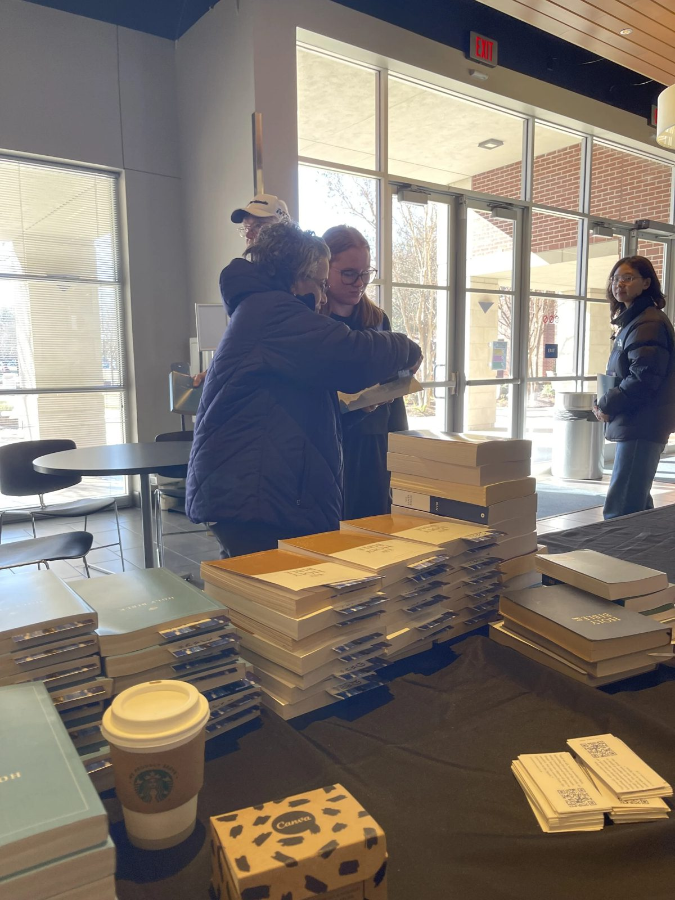
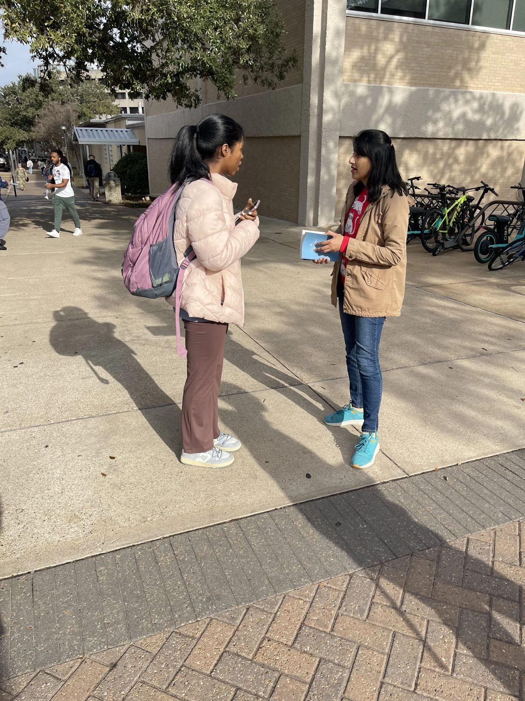
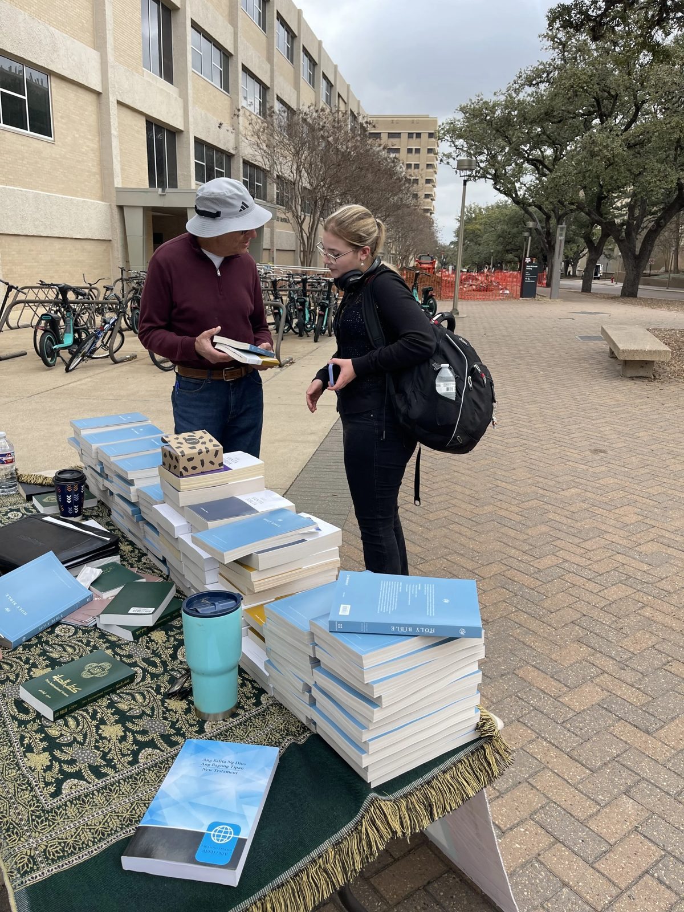
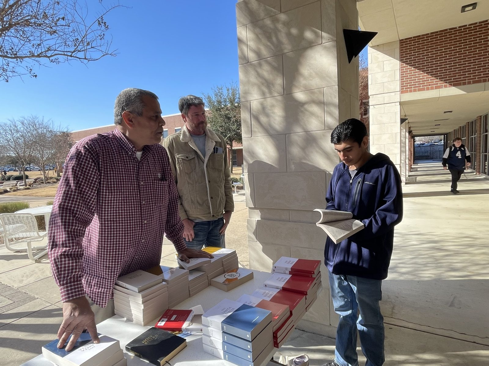
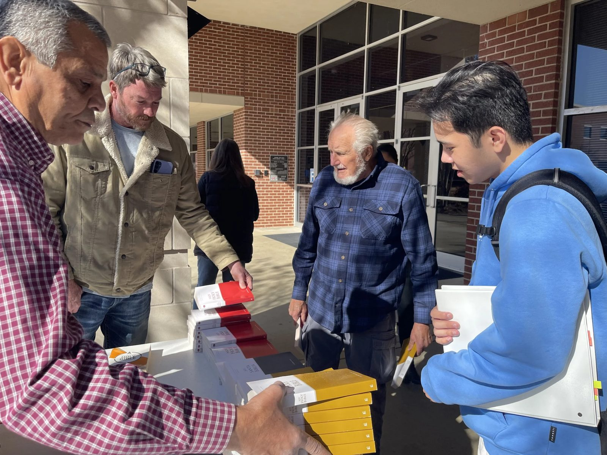
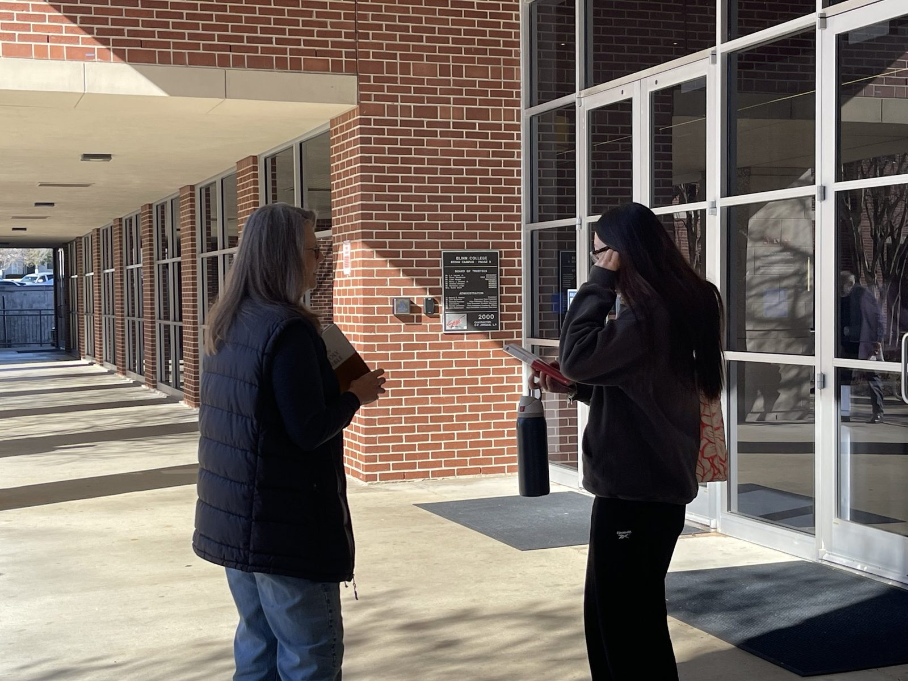

01
Bibles in their own language
English, Spanish, Arabic, Chinese, French, German, Russian, Hindi, Urdu, Korean, Italian and more—given free to students.
Explore ministriesInternational student mission · Bryan, Texas
Every semester, thousands of international and national students come to Texas. We welcome them with Christian hospitality and share the living truth of Jesus—especially with students from nations where scriptures are scarce.
Tax-deductible 501(c)(3) · 0% platform fees through Zeffy






The Bible, in their language
John 3:16 English
For God so loved the world, that he gave his only born Son, that whoever believes in him should not perish, but have eternal life.
01 Gatherings
A campus table, a dinner, an outreach. Everyone is welcome—no experience needed, just come. Our Thursday dinners give international students a home-cooked meal and a safe place to ask honest questions.
02 What we do
While students learn English for their studies, faith remains deeply personal. We give them the chance to meet God’s Word in the language of their hearts and heritage.
01
English, Spanish, Arabic, Chinese, French, German, Russian, Hindi, Urdu, Korean, Italian and more—given free to students.
Explore ministries
02
Friendly tables at Blinn College and Texas A&M welcome students as they arrive, with free Bibles and a warm conversation.
See where we are
03
Weekly dinners in Bryan with home-cooked meals, warm companionship, and room to ask honest questions.
Join a table03 Partner with us
Every Bible, every dinner and every campus table is made possible by people who give. Your gift goes directly to native-language Bibles and hospitality for international students.
Tax-deductible 501(c)(3) · Secure giving through Zeffy · 0% platform fees